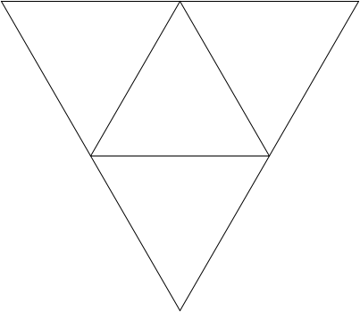
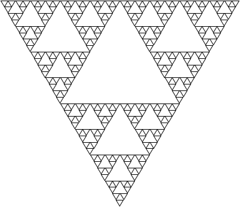
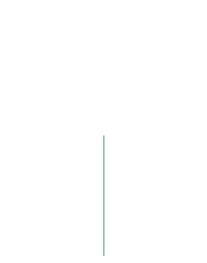
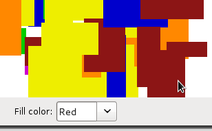

/fractals-starter-files.zip">
 /icon48-zip.gif" class="largeicon" alt="icon" />
/icon48-zip.gif" class="largeicon" alt="icon" />
Project Starter ZIP
(open Fractals.pro)
Project Starter ZIP
(open Fractals.pro)
Turn in:
-
Assignment by Marty Stepp and Victoria Kirst. Thanks to Eric Roberts, Julie Zelenski, Jerry Cain, Keith Schwarz for problem ideas.
This problem focuses on recursion.
This is an individual assignment. Write your own solution and do not work in a pair/group on this program.
It is fine to write "helper" functions to assist you in implementing the recursive algorithms for any part of the assignment. Some parts of the assignment essentially require a helper to implement them properly. It is up to you to decide which parts should have a helper, what parameter(s) the helpers should accept, and so on. You can declare function prototypes for any such helper functions near the top of your .cpp file. (Don't modify the provided .h files to add your prototypes; put them in your own .cpp file.)
We provide a GUI for you that helps you run and test your code.
In this problem you will write several recursive functions related to drawing graphics. Recursive graphical patterns are also called fractals.
If you search the web for fractal designs, you will find many intricate wonders beyond the Koch snowflake illustrated in Chapter 8. One of these is the Sierpinski Triangle, named after its inventor, the Polish mathematician Waclaw Sierpinski (1882-1969). The order-1 Sierpinski Triangle is an equilateral triangle, as shown in the diagram below.
For this problem, you will write a recursive function that draws the Sierpinski triangle fractal image.
Your solution should not use any loops; you must use recursion.
Do not use any data structures in your solution such as a Vector, Map, arrays, etc.
void drawSierpinskiTriangle(GWindow& gw, double x, double y, double size, int order)
To create an order-K Sierpinski Triangle, you draw three Sierpinski Triangles of order K-1, each of which has half the edge length of the original. Those three triangles are positioned in what would be the corners of the larger triangle; together they combine to form the larger triangle itself. Take a look at the Order-2 Sierpinski triangle below to get the idea.
Your function should draw a black outlined Sierpinski triangle when passed a reference to a graphical window, the x/y coordinates of the top/left of the triangle, the length of each side of the triangle, and the order of the figure to draw (such as 1 for Order-1, etc.).
The provided code already contains a main function that pops up a graphical user interface to allow the user to choose various x/y positions, sizes, and orders.
When the user clicks the appropriate button, the GUI will call your function and pass it the relevant parameters as entered by the user.
The rest is up to you.
If the order passed is 0, your function should not draw anything. If the x, y, order, or size passed is negative, your function should throw a string exception. Otherwise you may assume that the window passed is large enough to draw the figure at the given position and size.
Some students mistakenly think that some levels of Sierpinski triangles are to be drawn pointing upward and others downward; this is incorrect. The upward-pointing triangle in the middle of the Order-2 figure is not drawn explicitly, but is instead formed by the sides of the other three downward-pointing triangles that are drawn. That area, moreover, is not recursively subdivided and will remain unchanged at every order of the fractal decomposition. Thus, the Order-3 Sierpinski Triangle has the same open area in the middle.
|

Order-2
|

Order-3
|

... Order-6
|
We have not really learned much about the GWindow class or drawing graphics, but you do not need to know much about it to solve this problem.
The only member function you will need from the GWindow is its drawLine function.
(complete GWindow documentation):
| Member | Description |
|---|---|
gw.drawLine(x1, y1, x2, y2); |
draws a line from point (x1, y1) to point (x2, y2) |
Note: You may find yourself needing to compute the height of a given triangle so you can pass the right x/y coordinates to your function or to the drawing functions. Keep in mind that the height h of an equilateral triangle is not the same as its side length s. The diagram below shows the relationship between the triangle and its height. You may want to look at information about equilateral triangles on Wikipedia and/or refresh your trigonometry.
A particular style of solution we want you to avoid is the "pair of functions" solution, where you write one function to draw "downward-pointing" triangles and another to draw "upward-pointing" triangles, and each one calls the other in an alternating fashion. That is a poor solution that does not capture the self-similarity inherent in this fractal figure.
Another thing you should avoid is re-drawing the same line multiple times. If your code is structured poorly, you end up drawing a line again (or part of a line again) that was already drawn, which is unnecessary and inefficient. If you aren't sure whether your solution is redrawing lines, try making a counter variable that is incremented each time you draw a line and checking its value.
If the order passed is 0, your function should not draw anything. If the x, y, order, or size passed is negative, your function should throw a string exception. Otherwise you may assume that the window passed is large enough to draw the figure at the given position and size.
Expected output:
 You can compare your graphical output against the following image files, which are already packed into the starter code and can be compared against by clicking the "compare output" icon in the provided GUI, as shown at right.
Please note that due to minor differences in pixel arithmetic, rounding, etc., it is very likely that your output will not perfectly match ours.
It is okay if your image has non-zero numbers of pixel differences from our expected output, so long as the images look essentially the same to the naked eye when you switch between them.
You can compare your graphical output against the following image files, which are already packed into the starter code and can be compared against by clicking the "compare output" icon in the provided GUI, as shown at right.
Please note that due to minor differences in pixel arithmetic, rounding, etc., it is very likely that your output will not perfectly match ours.
It is okay if your image has non-zero numbers of pixel differences from our expected output, so long as the images look essentially the same to the naked eye when you switch between them.
For this problem, write a recursive function that draws a recursive tree fractal image as specified.
Your solution is allowed to use loops if they are useful to help remove redundancy, but your overall approach to drawing nested levels of the figure must still be recursive.
Do not use any data structures in your solution such as a Vector, Map, arrays, etc.
void drawTree(GWindow& gw, double x, double y, double size, int order)
Our tree fractal contains a trunk that is drawn from the bottom center of the applicable area (x, y) through (x + size, y + size). The trunk extends straight up through a distance that is exactly half as many pixels as size.
The drawing below is a tree of order 5. Sitting on top of its trunk are seven trees of order 4, each with a base trunk length half as long as the prior order. Each of the order-4 trees is topped off with seven order-3 trees, which are themselves comprised of seven order-2 trees, and so on.
The parameters to your function represent, in order: the window on which to draw the figure; the x/y position of the top/left corner of the imaginary bounding box surrounding the area in which to draw the figure; the general width and height (size) of the figure; and the number of levels (order) of the figure.
Some of these parameters are somewhat unintuitive. For example, the x/y coordinates passed are not the x/y coordinates of the tree trunk itself, but instead the x/y coordinates of a bounding box area in which to draw the tree. The diagram below attempts to clarify this.
drawTree(gw, 100, 20, 300, 3); call parametersLengths: The seven subtrees each have a length that is exactly half of their parent branch's length in pixels.
Angles: The seven subtrees extend from the tip of the previous tree trunk at relative angles of ±45, ±30, ±15, and 0 degrees relative to their parent branch's angle. For example, if you look at the Order-1 figure, you can think of it as a vertical line being drawn in an upward direction and facing upward, which is a polar angle of 90 degrees. In the Order-2 figure, the seven sub-branches extend at angles of 45, 60, 75, 90, 105, 120, and 135 degrees. And so on.
Colors: Inner branches, ones drawn at order 2 and higher, are drawn in a color of #8b7765 (r=139, g=119, b=101), and the leafy fringe branches of the tree (branches drawn at level 1) are drawn in a color of #2e8b57 (r=46, g=139, b=87).
The images below show the progression of each order of the tree fractal figure.
|

Order-1
|

Order-2
|

Order-3
|

Order-4
|
Order-5
|
You should use the GWindow object's drawPolarLine function to draw lines at various angles and its setColor function to change drawing colors,
as seen in the Koch snowflake example from lecture.
| Member | Description |
|---|---|
gw.drawPolarLine(x0, y0, r, theta); gw.drawPolarLine(p0, r, theta);
|
draws a line the given starting point, of the given length r, at the given angle in degrees theta relative to the origin |
gw.setColor(color); |
sets color used for future shapes to be drawn, either as a hex string such as "#aa00ff" or an RGB integer such as 0xaa00ff |
If the order passed is 0, your function should not draw anything. If the x, y, order, or size passed is negative, your function should throw a string exception. Otherwise you may assume that the window passed is large enough to draw the figure at the given position and size.
Expected output:
 You can compare your graphical output against the following image files, which are already packed into the starter code and can be compared against by clicking the "compare output" icon in the provided GUI, as shown at right.
Please note that due to minor differences in pixel arithmetic, rounding, etc., it is very likely that your output will not perfectly match ours.
It is okay if your image has non-zero numbers of pixel differences from our expected output, so long as the images look essentially the same to the naked eye when you switch between them.
You can compare your graphical output against the following image files, which are already packed into the starter code and can be compared against by clicking the "compare output" icon in the provided GUI, as shown at right.
Please note that due to minor differences in pixel arithmetic, rounding, etc., it is very likely that your output will not perfectly match ours.
It is okay if your image has non-zero numbers of pixel differences from our expected output, so long as the images look essentially the same to the naked eye when you switch between them.
For this problem, write a recursive function to perform a "flood fill" on a graphical window as described below. Your solution should not use any loops or data structures; you must use recursion.
int floodFill(GBufferedImage& image, int x, int y, int color)
Most computer drawing programs make it possible to fill a region with a solid color. Typically you do this by selecting the "fill" tool and selecting a color, then clicking the mouse somewhere in your drawing. When you click, the paint color spreads outward from the point you clicked to every contiguous part of the image that is the same color as the pixel where you clicked. For example, if you select the Fill tool and choose Red as your color, then click on a purple part of the image, the Fill operation will cause that part of the image, along with any purple part that is touching it, to become red. The screenshots below provide an illustration:

Before flood fill
|

After flood fill
|
The image is composed of a 2-D grid of tiny square dots called pixels (picture elements). When the user clicks, whatever color that pixel was, it should be replaced by the fill color outward in all four directions: up, down, left, and right. For example, if the initial pixel color is purple, change it to red, then explore one pixel up, down, left, and right from there, looking for more purple pixels and changing them to red. If your exploration leads you to a pixel that is a different color (such as yellow rather than purple in our example), stop exploring in that direction.
Drawing pixels:
The same GWindow object as used in the other images is also used here.
You can use the following member functions of the window object to get and set the color of individual pixels, where (0, 0) is the top-left corner of the drawing canvas and (w-1, h-1) is the bottom right corner.
| Member | Description |
|---|---|
gw.getPixel(x, y) |
returns the color of the pixel at position (x, y) as an RGB integer |
gw.getCanvasWidth()
|
returns the width of the window's drawing canvas in pixels |
gw.getCanvasHeight()
|
returns the height of the window's drawing canvas in pixels |
gw.inCanvasBounds(x, y) |
returns true if pixel (x, y) is within the bounds of the drawing area |
gw.setPixel(x, y, rgb); |
sets the color of the pixel at position (x, y) to the given color as an RGB integer |
NOTE:
The GWindow object has other methods that are similar to the ones in the table above but would be incorrect to use on this assignment.
For example, there are methods getWidth, getHeight, and inBounds that operate relative to the entire window's height, but that height includes things like the window's title bar, the northern area of widgets in the window, etc. that we do not want to consider in this problem.
So take care to use getCanvasWidth, getCanvasHeight and inCanvasBounds here to limit yourself to the proper bounds.
Your code should take care not to access any pixel outside of the bounds of the graphical image, (0, 0) through (width-1, height-1). If you try to get/set a pixel color that is out of bounds, your program will crash.
Colors as RGB integers:
The colors of pixels are returned as int values.
The exact values that map to various colors don't especially matter to your code, though you can see what color maps to what integer value by looking at the fractalmain.cpp file.
If you want to print a color out on the console for debugging, it is easier to view it in hexadecimal (base-16) mode.
To do that, you'd issue a special hex command (from the <iomanip> C++ system library) to cout to make it print an integer in hexadecimal rather than decimal (base-10), such as the following:
cout << hex << color << endl; // print an RGB integer for debugging
Return value:
Your function must return the total number of pixels that changed color.
For example, if your code ends up filling a 50x30 rectangular region, your function would return 1500.
If no pixels change color, return 0.
If the x or y value passed is negative or is outside the bounds of the given image, throw a string exception. You may assume that the color passed is a valid RGB color that can be drawn on the screen.
Optimization:
For efficiency your function is required to implement a particular optimization.
If the caller passes the same fill color as the current pixel's existing color, do not color any pixels and immediately return 0.
For example, if the user has the Fill color set to Blue and clicks a blue area, your function should immediately return 0.
You can test whether your function is implementing this correctly by examining the number of pixels filled by your function in the GUI.
On some machines, filling a very large area of pixels can crash your program because of too many nested function calls (also called a "stack overflow"). This is out of your control. You may ignore this issue, so long as your algorithm is correct.
Tip: If you hold the Shift key when pressing the Flood Fill button, it won't add any random rectangles to the screen. This makes it easier for you to play around with mixing the different graphical algorithms, such as flood-filling the center of the triangles in a Sierpinski triangle fractal.
Expected output:
 It is sometimes tricky to compare output in this problem because the GUI makes random rectangles appear on the screen, so your program's rectangles may not match ours.
We have tried to mitigate this by "seeding" the random number generator in our program to produce the same rectangles on each run.
You can compare your graphical output against the following image files, which are already packed into the starter code and can be compared against by clicking the "compare output" icon in the provided GUI, as shown at right.
Please note that due to minor differences in pixel arithmetic, rounding, etc., it is very likely that your output will not perfectly match ours.
It is okay if your image has non-zero numbers of pixel differences from our expected output, so long as the images look essentially the same to the naked eye when you switch between them.
It is sometimes tricky to compare output in this problem because the GUI makes random rectangles appear on the screen, so your program's rectangles may not match ours.
We have tried to mitigate this by "seeding" the random number generator in our program to produce the same rectangles on each run.
You can compare your graphical output against the following image files, which are already packed into the starter code and can be compared against by clicking the "compare output" icon in the provided GUI, as shown at right.
Please note that due to minor differences in pixel arithmetic, rounding, etc., it is very likely that your output will not perfectly match ours.
It is okay if your image has non-zero numbers of pixel differences from our expected output, so long as the images look essentially the same to the naked eye when you switch between them.
As in other assignments, you should follow our Style Guide for information about expected coding style. You are also expected to follow all of the general style constraints emphasized in the Homework 1 and 2 specs, such as the ones about good problem decomposition, parameters, using proper C++ idioms, and commenting. The following are additional points of emphasis and style contraints specific to this problem:
Recursion: Part of your grade will come from appropriately utilizing recursion to implement your algorithm as described previously. We will also grade on the elegance of your recursive algorithm; don't create special cases in your recursive code if they are not necessary. Avoid "arm's length" recursion, which is where the true base case is not found and unnecessary code/logic is stuck into the recursive case. Redundancy in recursive code is another major grading focus; avoid repeated logic as much as possible. As mentioned previously, it is fine (sometimes necessary) to use "helper" functions to assist you in implementing the recursive algorithms for any part of the assignment.
Variables:
While not new to this assignment, we want to stress that you should not make any global or static variables (unless they are constants declared with the const keyword).
Do not use globals as a way of getting around proper recursion and parameter-passing on this assignment.
Collections: Do not use any collections on any of the graphical algorithms in this part of the assignment.
For each assignment problem, we receive various frequent student questions. The answers to some of those questions can be found by clicking the link below.
Here are some ideas for extra features that you could add to your program for a very small amount of extra credit:
floodFill that also accepts a tolerance amount as an integer and keeps going until the pixel color distance exceeds that threshold.
The distance between two pixels' colors could be defined in several ways, but one simple way would be the sum of the absolute values of the differences between the red, green, and blue components of the two colors.
Indicating that you have done extra features: If you complete any extra features, then in the comment heading on the top of your program, please list all extra features that you worked on and where in the code they can be found (what functions, lines, etc. so that the grader can look at their code easily).
Submitting a program with extra features: Since we use automated testing for part of our grading process, it is important that you submit a program that conforms to the preceding spec, even if you want to do extra features. If your feature(s) cause your program to change the output that it produces in such a way that it no longer matches the expected sample output test cases provided, you should submit two versions of your program file: a first one with the standard file name without any extra features added (or with all necessary features disabled or commented out), and a second one whose file name has the suffix -extra.cpp with the extra features enabled. Please distinguish them in by explaining which is which in the comment header. Our turnin system saves every submission you make, so if you make multiple submissions we will be able to view all of them; your previously submitted files will not be lost or overwritten.